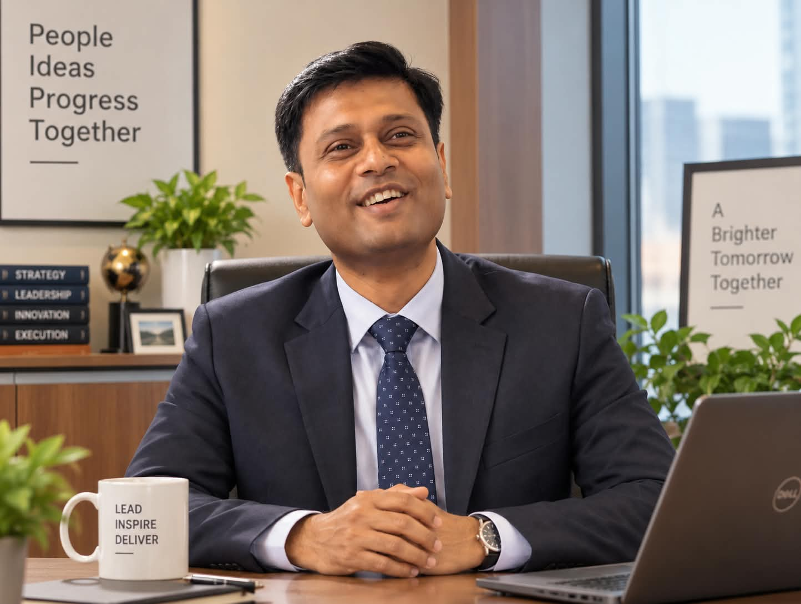

Kumar Ashwini
Financial modelling, machine learning and full-stack web development
Sixteen years running enterprise IT at Bharat Petroleum, three years as project director at a non-profit, and now an MBA candidate at IIM Lucknow.
I'm looking for roles in fintech, consulting and IT strategy, where a business problem needs both sound financial judgement and a system that actually works.
Each bar is drawn to scale. Most of my career has been spent inside large systems that move money, fuel and people. The MBA is about learning the business decisions those systems serve.
Things I've built
Working software, mostly for problems I or my classmates actually have. Hosted on GitHub Pages, Vercel and Supabase.
-
Stock Analyzer
Personal project, 2026
Enter any NSE, BSE or US ticker and get a Buy, Watch or Reject verdict. It scores a company out of 85 points across profitability, debt and cash, growth, valuation and price risk, and shows every calculation behind the result.
- Python
- yfinance
- Financial ratio analysis
- Vercel
-
Iron Condor Lab
Web app built from my FDRM group project, IIM Lucknow, 2026
Backtests short iron condors (traditional, calls-only and puts-only) on any NSE F&O stock. Each month it sets strikes from the monthly ATR, prices every leg from NSE's bhavcopy, holds to expiry, and reports P&L per lot and as a percentage of Zerodha margin, with sensitivity tables and a downloadable Excel model.
- Options strategy backtesting
- NSE F&O bhavcopy
- Yahoo Finance
- Vercel
-
CampusPulse AI
Personal project, 2026
A command center for IIM Lucknow students. Deadlines, assignments, attendance and daily email reminders in one dashboard, behind Google sign-in.
- OAuth 2.0
- Vercel
- Email automation
-
Campus attendance platform
Personal project, 2026
Attendance management for a whole campus, with separate roles for admins, professors and students. Sign-in is limited to the college domain.
- FastAPI
- Supabase Postgres
- Supabase Auth
- Vercel
-
Courtyard
Scrum team project, 2026
A campus sports app for equipment checkout and tournaments. As a developer on the team, I built the fixtures, live scores and standings views.
- React
- Vite
- Scrum, weekly sprints
Tools I made for everyday use
When something in my routine is tedious, I write a small app for it. These are live and in daily use on campus and at home.
For study and work
-
Lecture Notes Studio
Turns a lecture recording or transcript into cleaned-up audio, illustrated class notes and a PPT-style video lecture for revision.
Open the studio -
Session Recorder
Records my screen, a window or a browser tab in the browser, with system and microphone audio, and saves the video straight to my computer. No sign-up and no software to install.
Open the recorder -
Toolbox
Turns a batch of images into a single PDF. It's the start of one web page for my older Python utility scripts for PDFs, OCR and speech.
Open the toolbox -
Exam revision portal
One place for my end-term revision material, organised by course.
Open the portal
At home
-
Math practice for kids
An arithmetic practice app I built for a young learner at home.
Try a practice round -
Daily yoga class player
Plays the right Habuild class video for each weekday from Google Drive, so home practice starts with one tap.
Open the player -
Driving test quiz
Practice for the driving licence test: each round draws 20 random questions from a 405-question bank, with answer order shuffled and instant right-or-wrong feedback.
Take a quiz
Research and analysis
Quantitative models and strategy work from my internship, live projects and MBA coursework.
-
Bankruptcy prediction from annual-report text
Summer internship, Quantropy Research and Solution LLP, 2026
Built a pipeline that scrapes annual reports of about 167 listed and delisted Indian companies from BSE and NSE, extracts the Management Discussion and Analysis section, and trains embedding, CNN and BiLSTM classifiers to flag financial distress. The distress label came from compulsory delistings (67 distressed against 100 healthy firms). Much of the work went into keeping the evaluation honest: company-level splits to prevent leakage, focal loss for class imbalance, and calibrated decision thresholds. The result is an inference engine that scores any new annual report's distress probability in seconds.
- Python
- PyMuPDF
- Deep learning
- NLP
-
JPMorgan investment banking benchmark
Live project, Koed
Benchmarked JPMorgan's investment banking franchise (M&A, ECM and DCM) against Goldman Sachs and Morgan Stanley. Built a five-year Excel model of revenue, profit and fee mix, and gave a SWOT-based Buy, Hold or Sell call.
- Equity research
- Financial modelling
- Excel
-
NSE equity portfolio
Live project, Koed
Built a ₹1 lakh, 10-stock, five-sector NSE portfolio and measured its CAGR, standard deviation, beta and risk-return profile. It beat the Nifty 50 by 5.67 percentage points a year on a risk-adjusted basis, and the analysis quantified the benefit of diversification.
- Portfolio construction
- Risk metrics
- Benchmarking
-
Groww vs Zerodha: platform strategy
TIDPBM course project, IIM Lucknow
A platform-economics analysis of Groww benchmarked against Zerodha, covering industry structure, network effects, multi-homing, mobilization risks and business models, with a strategy and action plan.
- Five Forces
- Value net
- Network effects
-
Real options valuation
PEMB course, IIM Lucknow
A binomial lattice model for deciding when an Indian manufacturer should invest, solved by backward induction in Excel. An earlier assignment modelled job search as an optimal stopping problem.
- Dynamic programming
- CRR lattice
- Excel
-
Efficiency benchmarking with DEA
PEMB coursework, IIM Lucknow
Data Envelopment Analysis in Excel Solver, from basic CCR and output-oriented models to super-efficiency and cross-efficiency rankings.
- Linear programming
- Excel Solver
-
Grassberry: McKinsey 7-S study
Strategic Management II project, IIM Lucknow
An organisational analysis of a young Indian company, built around an interview with its founder and supported by Porter's generic strategies.
- McKinsey 7-S
- Primary research
Experience and education
From enterprise IT to the social sector to business school.
MBA (PGP)
Indian Institute of Management Lucknow
Coursework in finance, risk, quantitative methods and strategy. Summer internship in 2026 at Quantropy Research and Solution LLP on machine learning for credit risk. CAT 2024: 98.52 percentile in Quant.
Project Director
Subhash Educational Society
- Led cross-functional execution of the Jal Jeevan Mission across 20 districts, reaching over 1 million beneficiaries.
- Automated the society's IT processes, raising efficiency by 50% and data accuracy by 30%.
- Grew grassroots engagement by 20% through community workshops.
Manager, Information Systems
Bharat Petroleum Corporation Ltd, Mumbai
Sixteen years at one of India's largest oil companies, handling ₹200+ crore of IT projects across refinery, marketing and LPG operations.
- Cut yearly operating cost by ₹15+ crore by proposing and rolling out IP telephony across all locations, which won an award at INTEROP.
- Established SAP readiness and inter-organisational connectivity for a ₹9,000+ crore refinery project.
- Ran ₹20+ crore of full-cycle procurement for four major projects, on time and within budget.
- Built real-time KPI dashboards and 200+ refinery performance reports, raising operations planning efficiency by 20%.
- Kept application and infrastructure stable for 8+ crore LPG consumers, leading BPCL and Microsoft teams.
- Built refinery machine-learning models for pumps, heat exchangers and flare from existing plant data.
B.Tech, Computer Science and Engineering
IIT (BHU), Varanasi
CGPA 8.46. IIT JEE All India Rank 481.
Equity Research and Financial Modelling; Machine Learning (Stanford University); ML and Deep Learning with Applications to Engineering Systems (IIT Bombay); Google Data Analytics and Python.